Team
The scientists and collaborators behind the Mexican Biobank Project.
Principal Investigators
International Collaborators
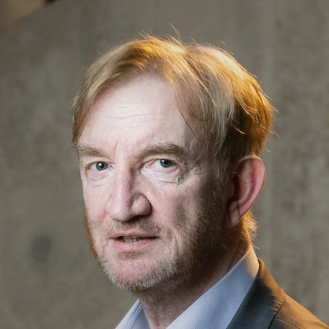
Adrian Hill
Alexander J. Mentzer
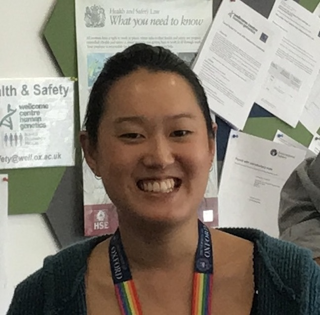
Amanda Chong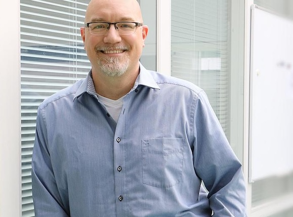
Tim Waterboer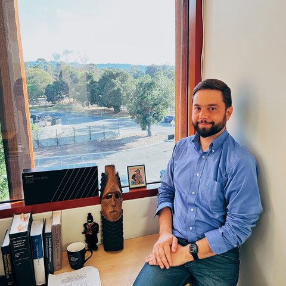
Alexander IoannidisMXB Researchers
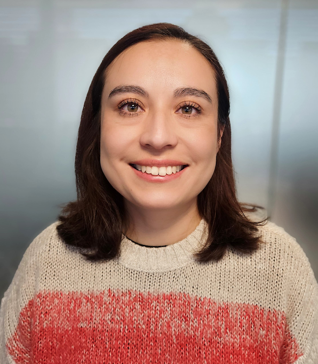
Consuelo D. Quinto-Cortés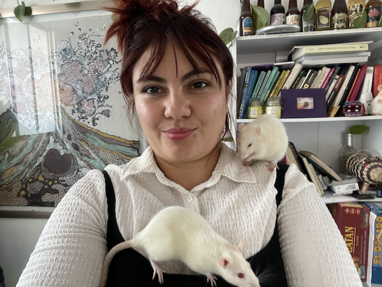
Carmina Barberena-Jonas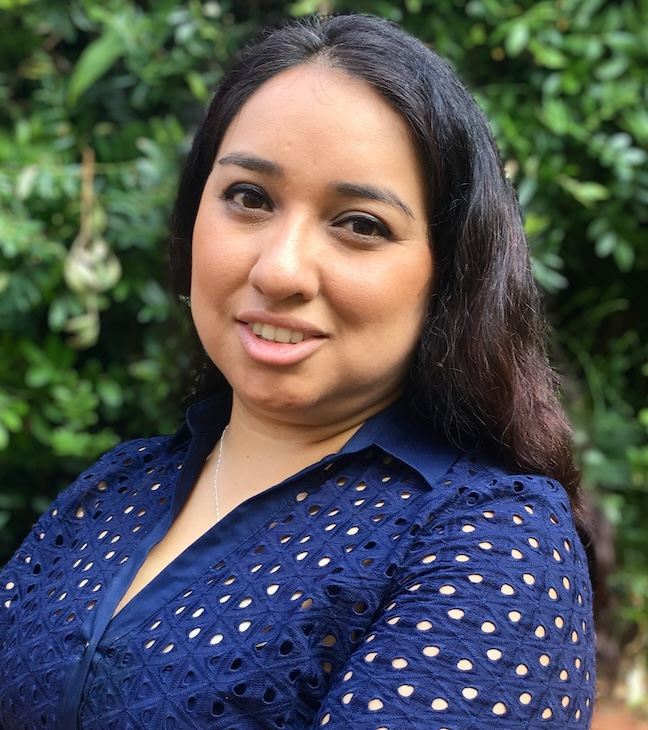
Claudia Gonzaga Jauregui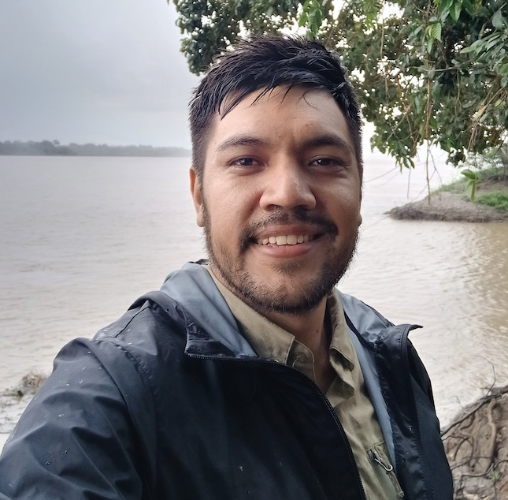
Santiago Medina-Muñoz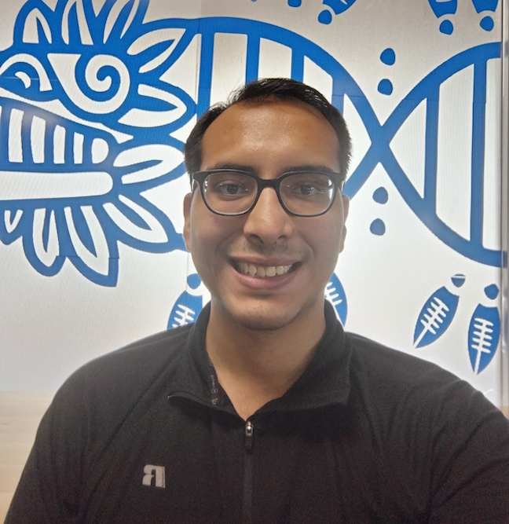
Ricardo Rodriguez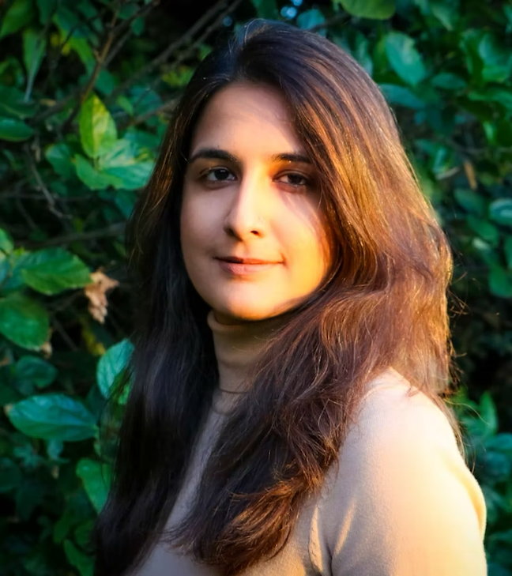
Mashaal Sohail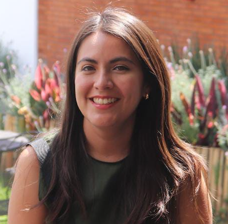
Maria José Palma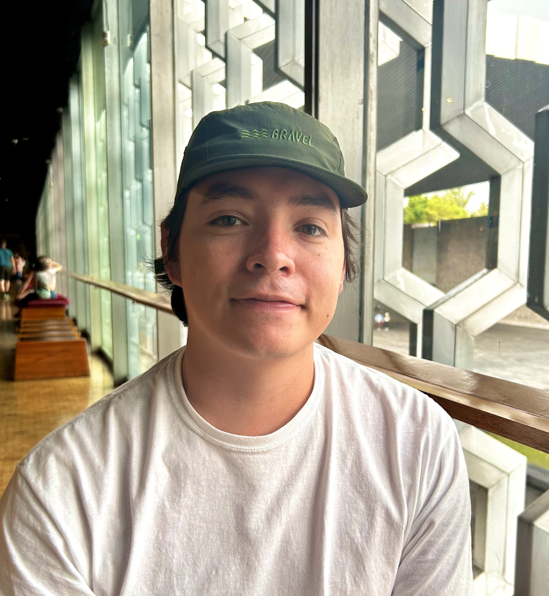
Ram Gonzalez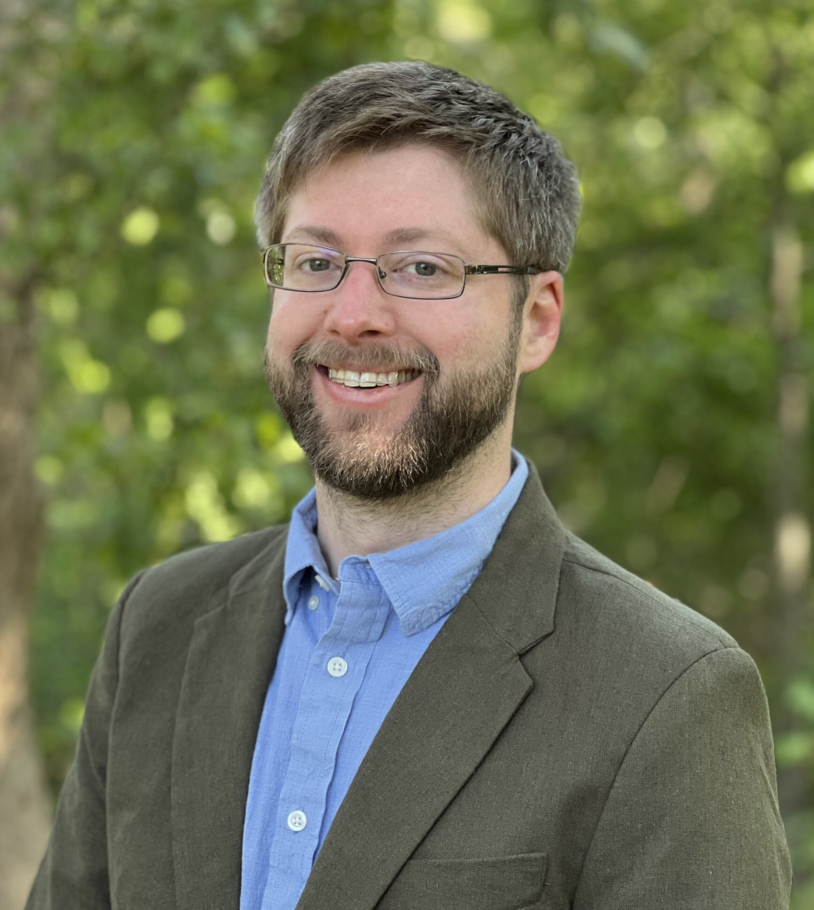
Austin W. Reynolds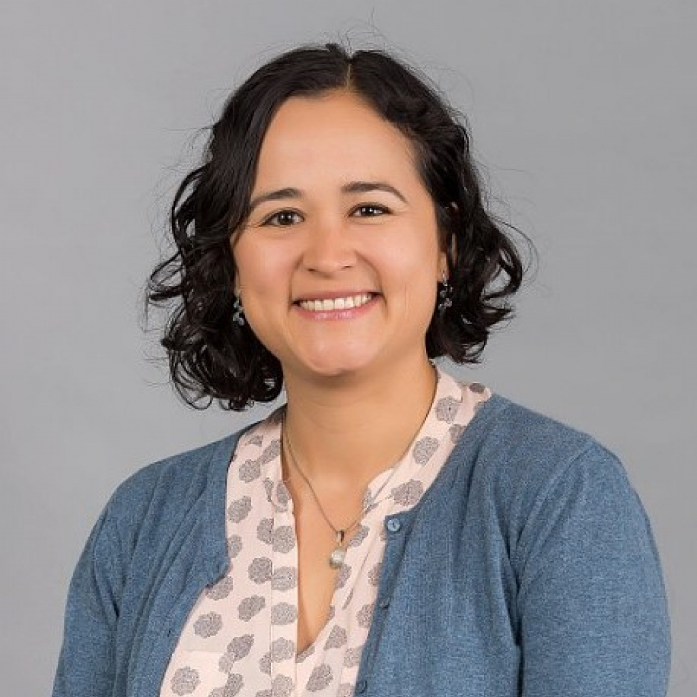
Selene Lizbeth Fernández Valverde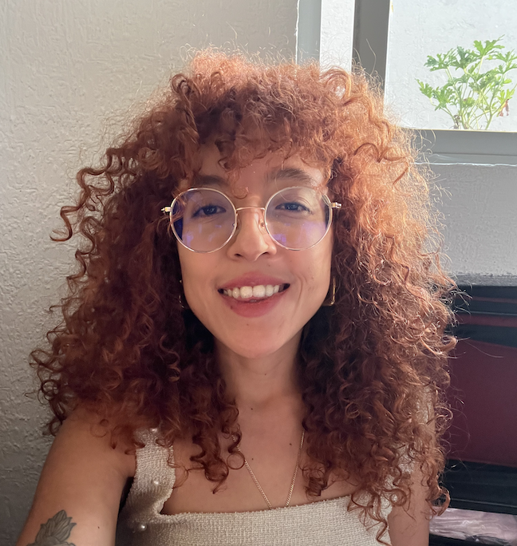
Daniela Orozco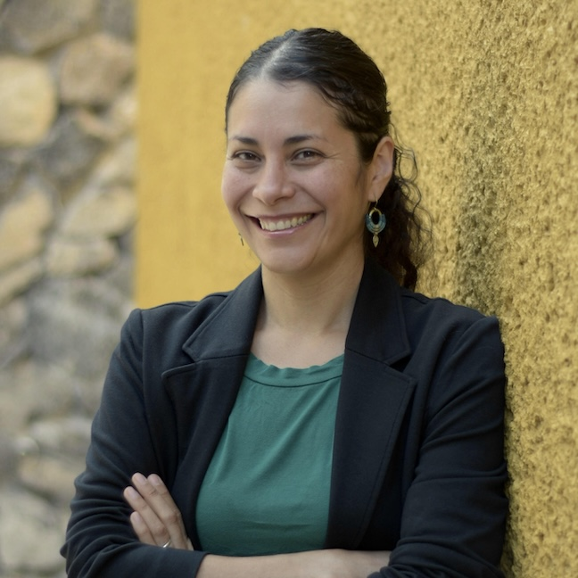
Maria Avila Arcos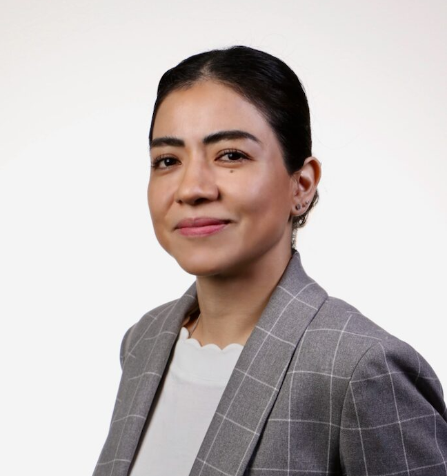
Alicia Huerta Chagoya
Josep Mercader
ENSA Genomics Consortium
Instituto Nacional de Salud Pública (INSP)
Sergio Canizales-QuinteroLuis Juárez-Figueroa
Luis Pablo Cruz-HervertElsa Sarti-Gutíerrez
Guadalupe Delgado-SánchezJaime Sepúlveda-Amor
Elizabeth Ferreira-GuerreroJosé Luis Valdespino-Gómez
Leticia Ferreyra-ReyesNorma Tellez-Vazquez
Lourdes García-GarcíaManuel Velázquez-Meza
Juan Eugenio Hernández-AvilaEduardo Lazcano-Ponce
Norma Mongua-Rodriguéz
Centro de Investigación y Estudios Avanzados (Cinvestav)
Carmina Barberena-JonásMaría de Jesús Ortega-Estrada
Vianka Cedillo-CastelánMaría José Palma-Martínez
Cecilia Gutiérrez-LópezConsuelo D Quinto-Cortés
Andres Moreno-EstradaMashaal Sohail
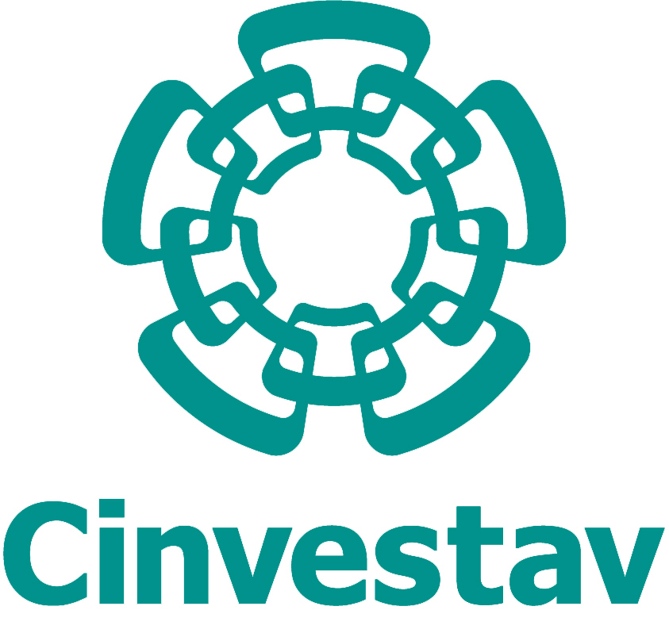

Instituto Nacional de Ciencias Médicas y Nutrición Salvador Zubirán (INCMNSZ)
Carlos Aguilar-SalinasAlicia Huerta-Chagoya
Hortensia Moreno-MaciasMaria Luisa Ordóñez-Sánchez
Rosario Rodríguez-GuillenMaria Teresa Tusié-Luna
Secretaría de Salud
Pablo Kuri-MoralesCarlos Magis-Rodriguéz
Roberto Tapia-ConyerOscar Velázquez-Monroy
Funding & Support
2016 - 2019
Building Capacity for Big Data Science in Medical Genomics
Co-funded by CONACYT (Mexico) and The Newton Fund (UK).
2024 - Present
AI Modeling of Genomic Datasets
Funded by the Chan Zuckerberg Initiative (CZI-2024-354605).